This is my "Relatives in Northern Ireland" in 1999 page.

Hold your mouse pointer over the picture for caption.
This is pre-digital photography...
I went to visit County Tyrone blindly, hoping to find a headstone or two in the churchyard of a long lost family member, and maybe a story or two about them... nope, found a whole batch of terrific new relatives!! Well... new to me. They knew they were there...
BTW, the scenery is very nice, reminds me of Eastern Pennsylvania's rolling hills and farmland. You can catch glimpses in the background of some of the pictures...
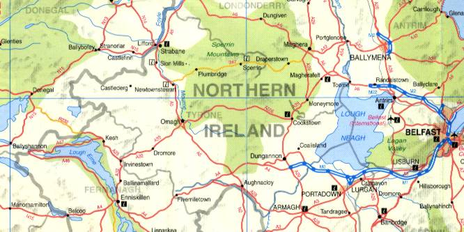
Newtownsaville is pronounced "NEWt'n-SAV'l"
Newtownsaville is between Omagh and Fivemiletown about where the 'A5' is along the A5 highway.
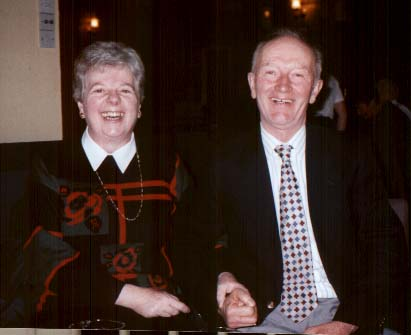
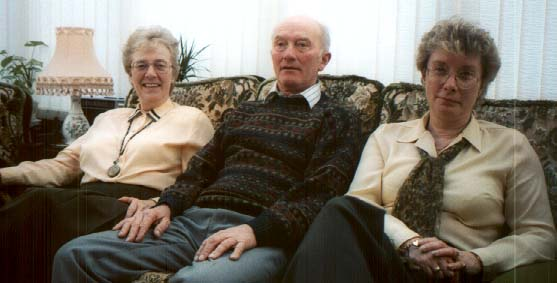
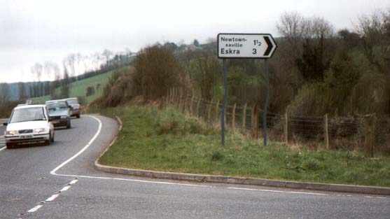
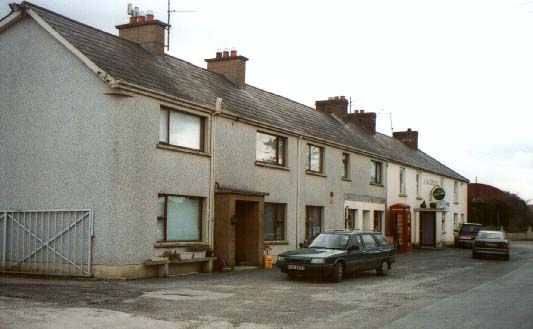
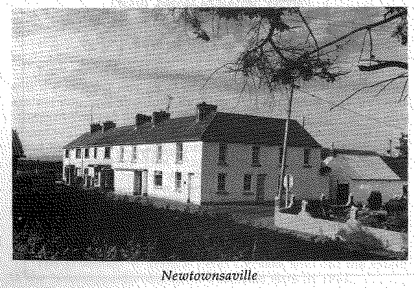
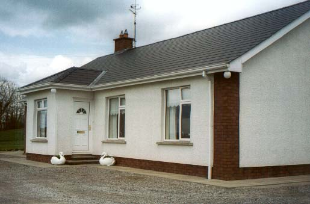
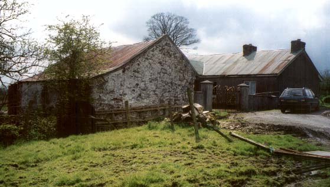
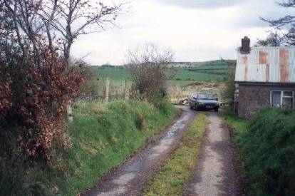
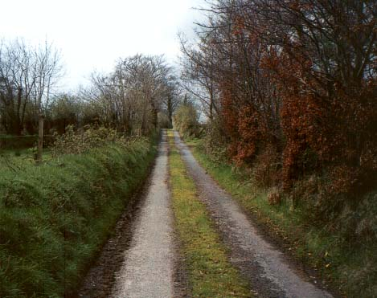
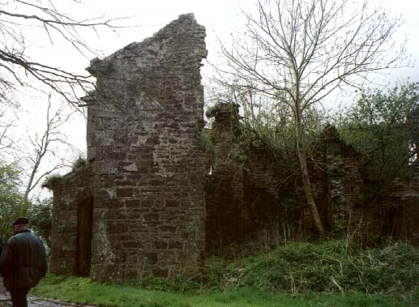
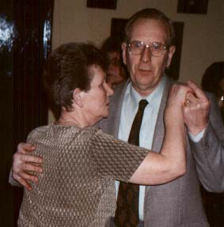
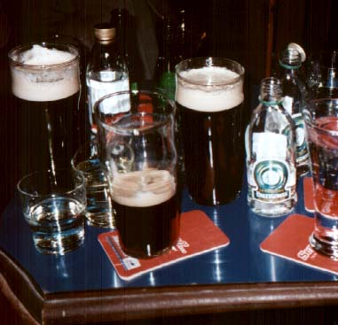
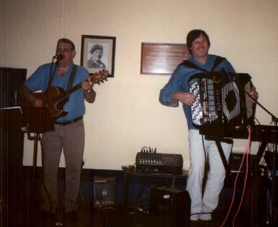
Four days were spent with my new-found family. They treated us like visiting royalty! I hope I can do the same for them someday soon!